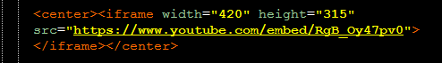
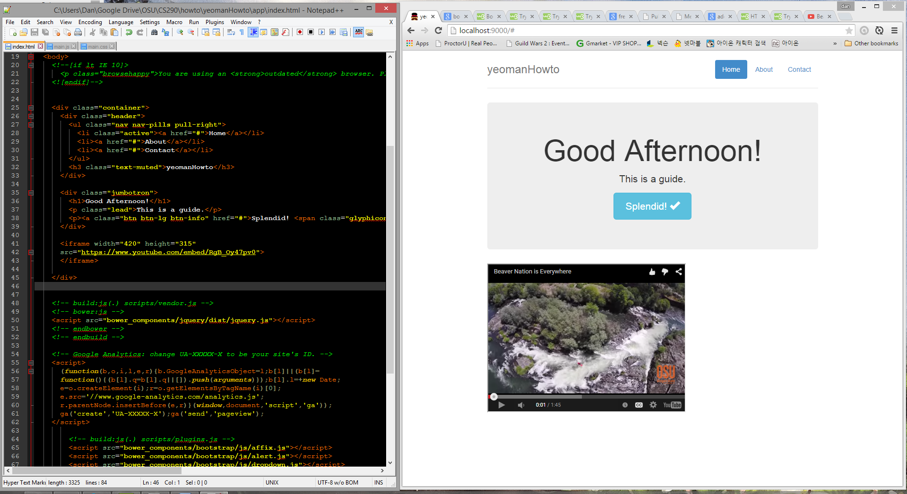

Adding Content
Making your space truly your own
At this point, we have all the tools we need to add fresh content to our webpage. Let’s practice adding a youtube video. This process is surprisingly easy and painless. First, search for an appropriate youtube video. For today’s demonstration, we’ll be using Beaver Nation is Everywhere. Now, it’s important to mention that we need to trim the video’s title. Replace
watch?v=
with
/embed/
Within your html file, add the following:
Once the html is saved, the page should automatically update and produce a new version of your new youtube-embedded website!
Yeoman offers a massive suite of options for site building.
Part 6: Preparing Content for the Internet